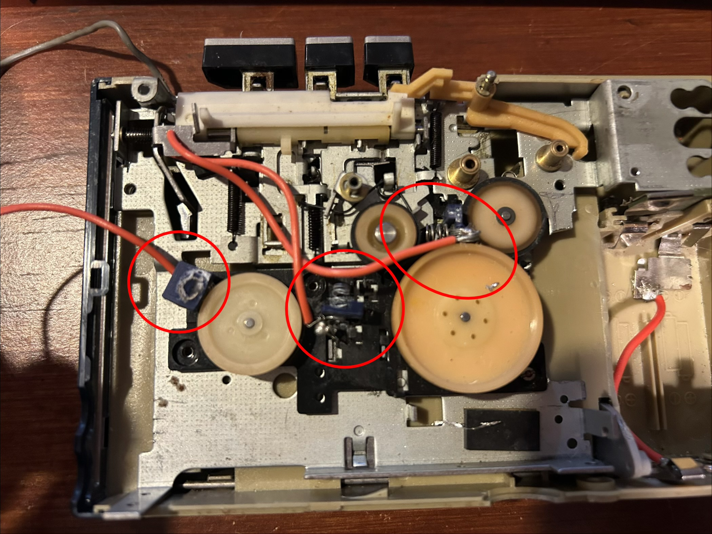
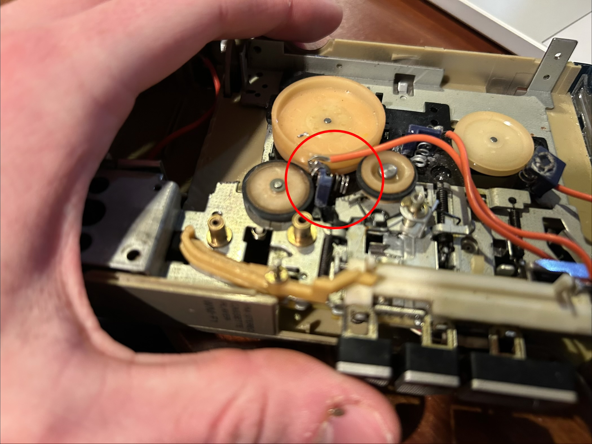
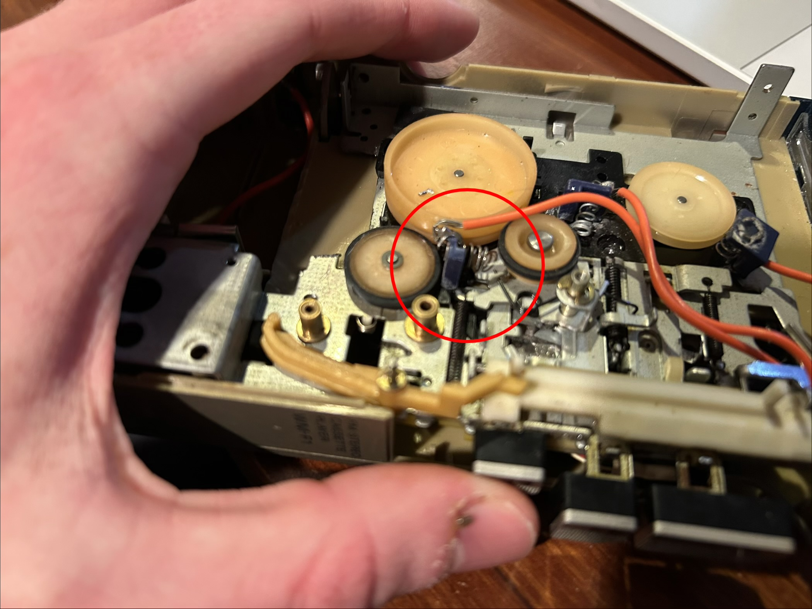
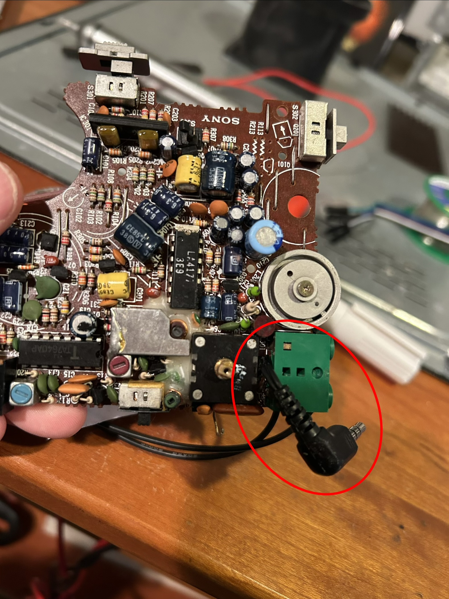
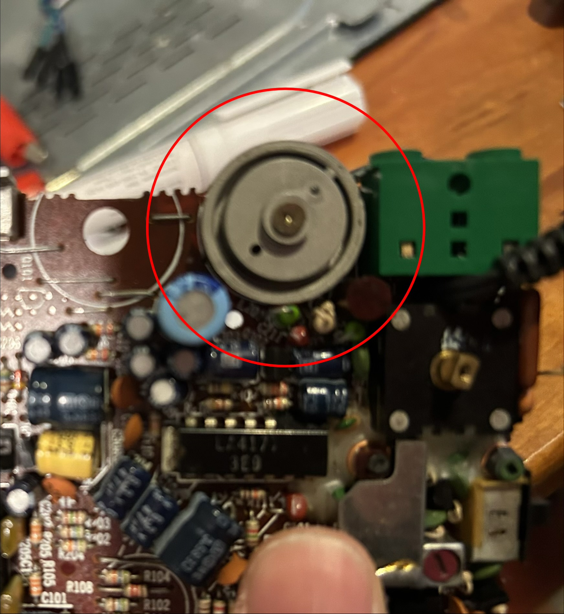
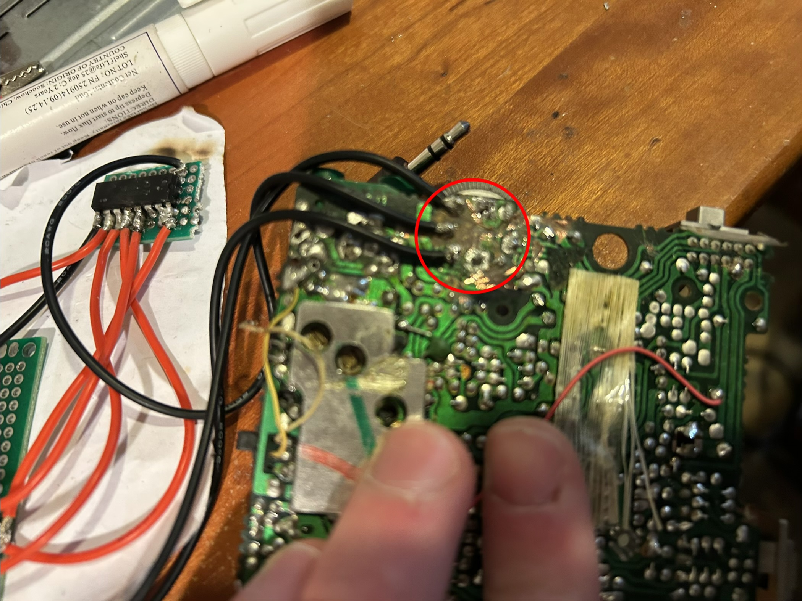
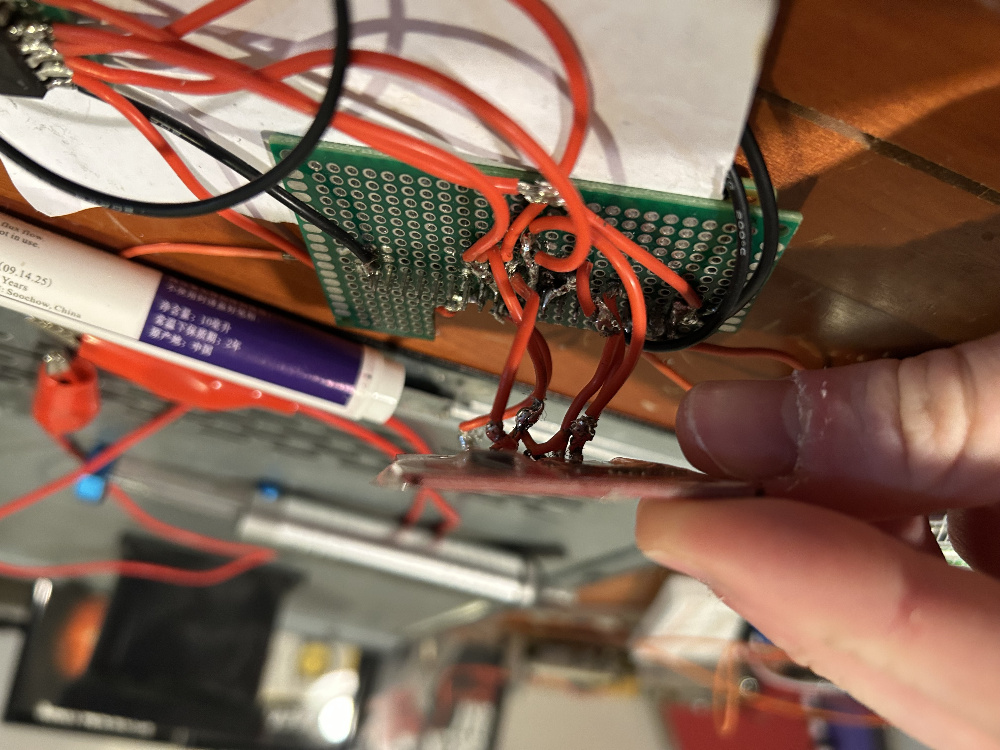

Linux based Walkman because my school banned phones
A year ago my school banned us from using our phones. Now there was probably a smart reason why they did this, but what it meant for me was no Green Day for 7 hours a day. Naturally I couldn't let this happen so I did the most logical thing:
Step one: Buy a broken walkman off ebay
You wouldn't belive how expensive a non functional one of these is, but luckily I got one.
Step two: Take it apart
This is pretty easy
Step three: Order a bunch of crap online
Mostly what you need is a Raspberry pi 0 like a cool tiny computer. It's going to take weeks to ship. Luckily in the mean time you can go to:
Step four:
So the real walkmans used magnetic tapes to store music. It’s really amazing how they pulled it off. If you ever want to be amazed look up how a cassette tape is manufactured. Anyways I can’t pull something like that off cause I’m not good at my job or something. But I can cheat at it. Because I have something the 80s didn’t. Tiny computers. By using a small digital system I can bypass the need for cassette tapes all together. So my plan is to make small 3d printed cassette style devices and put an NFC tag inside each one. Now when I was first planning this I didn’t know that people didn’t print cover art onto the cassettes like they did record sleeves but I’d already committed to a much cooler plan than boring plastic rectangles. Now my plan was to quickly make one cassette and print some art onto it just to have something to test off of. But I got really carried away making these and I made way too many so here’s all my work on each album. Along with my thoughts on the albums because why not.
(Note I used photoshop for the first few albums but switched over to Photopea because it actually works consistently. Though it sends me sad messages asking why I’m using an ad blocker which I’m not so don’t be guilt tripped by them)
- The basic technique I use for each album cover is to break it into its colors with Photopea and convert each colored shape into an SVG file which I can then pull into Fusion 360 and build out onto the cassette template before printing each layer on top of a different color. Then I added pegs to the back so I can connect two cassettes making them double sided.
American Idiot
This is the first one I made so I wasn’t very efficient in the timelapse but it still came out quite well for being the first one. Now this is the greatest album ever created and there’s not really much more to say. I’m very happy with how it came out.

Paramore
This one came out pretty well though my printer had some trouble with the thinner lines. Great album.

21st Century Breakdown
I’m also very happy with how the art for this one came out. It looks very nice and it’s a wonderful album.

Let Go
I had to go a little simpler with this one that I wanted and I probably should have done a little more with the background but all in all not bad. What a good album.
(this timelaps shows why the free version of Photoshop is so bad.) (Or I just don't know how to use it.) (Either way use Photopea it doesn't charge you to export your work.)

Nimrod
I’m very happy with this one, I wish I could have gotten the small text on the stickers but that wasn’t going to happen. Very good album.

Dookie
This one is nice but I ran out of red filament so use your imagination. Also this is the 2nd best album of all time.

Move Along
I didn’t think this one would work. But it did, so that’s fun. Great album.

From Under the Cork Tree
This one came out so well I definitely one of the best ones. Dance Dance is awesome.

Riot
I couldn’t get all the little words to come out that small so I tried to bring in the black and white with the marbled look of a composition notebook because I thought the artwork looked like something that would have been sketched on the side of a notebook. crushcrushcrush is a banger and Paramore is awesome.

Direct Hits
I keep forgetting to print this one so I’ll put in a photo when it’s done. Great album.

Death of a batchelor
I’m still out of red filament.

Step five:
So now I need some way to control the device, normally you control a walkman with three highly tactile push buttons on the side each of which moves a mechanical system inside the device. Now these buttons have such a nice mechanical feel that would be destroyed if I tried to integrate digital buttons. So I tried something that had no business working as well as it did. I built these small 3d printer pegs each of which holds a conductive spring connected to a wire. These springs are angled so when the mechanical system inside the walkman moves as a result of a button being pushed it contacts the mounted spring. This way by connecting the spring to a GPIO pin and grounding the metal frame of the device I can detect which button is pressed at any time.



step six:
As for playing audio, it’s not hard, you just buy two adapters (micro usb to usb c then usb c to aux) (there is a way to do this with audio via GPIO pins but it wasn’t working) and all of the sudden you can plug a pair of headphones into your raspberry pi. Now the only issue with this is that the aux adapter doesn’t look very good so I had to build one more adapter to play audio directly from the Walkman’s aux port. To do this I just cut the aux cable off of an old broken pair of earbuds, burned the end of the exposed wire to get rid of enamel and soldered those connectors into the exposed pins on the back of the walkman's pcb. All this really did is connect audio into the walkman’s original aux port but it works. (Important note I don’t recommend doing this but if you are going to connect cables to a pre-existing PCB make sure you don’t charge capacitors as they can explode and do not try this if you don’t know what you are doing.)

step seven:
Now where do you get music from? Well some people would pirate their songs but that’s illegal. So I went with the slightly less illegal route and might have copied some CDs onto an old desktop running as a server then sent them over to my raspberry pi.
step eight:
As for controlling the audio, the Walkman has a volume knob which I’d like to keep. However the analog walkman uses an analog potentiometer (little device that you can spin to change the resistance inside like a tiny light dimmer) to physically control the power flow. The raspberry pi can’t read data from an analog device so I’ll never this thing called a mcp3008 it’s basically a little translator that can read the analog data (resistance created from the potentiometer) from the potentiometer and translate it into digital data (1s and 0s) that the computer can read. After a ton of soldering it does technically work but the data drifts so much. To the point where over the course of a four minute song it might turn up the volume by 20% on its own (I found this out when Longview’s bass line almost blew out my ears). What I came to find out is that I forgot to disconnect the rest of the PCB and I was likely charging capacitors as I connected the volume dial which was throwing off the volume reading. To be clear, I'm lucky that this didn’t explode. I'm also really dumb. So I broke all connections and it’s working much better now, there is still a slight drift but not so I can likely write them out in software.



step nine:
Now to be able to read which cassette is in the player I need an NFC reader to read the NFC tag inside each cassette. I don’t have too much to say, I wired this up and made some room for it and it can detect each tag. Side note, it takes way too long to read the tag data inside each tag every time one is inserted so what happens is each time a new tag is put into the device it reads the album name from the NFC tag and saves the much faster to read tag id. This way the next time that tag is interred I can simply read the id number and call up that album. Now I understand this wiring looks awful I still need to work on sealing that but it works.

Step ten:
Now I'm still in the process of finilising this project so to avoid spreading lies before I know what I'm going to do. I will be updating the rest of this in the next few days.